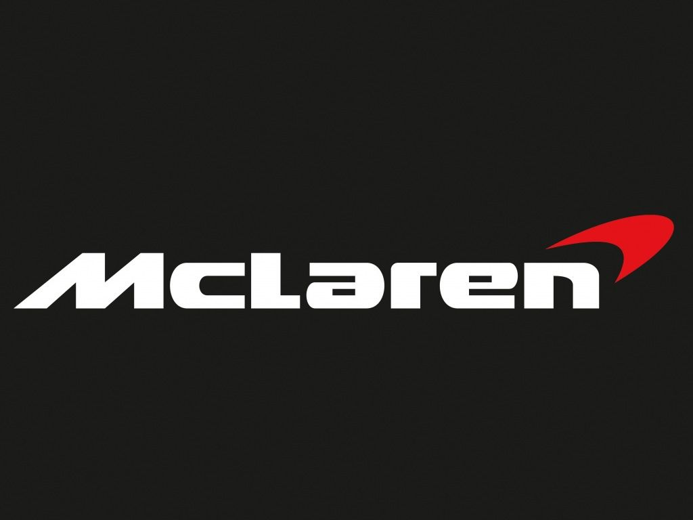

Developed by Leonardo Rosa Bittencourt
A McLaren Racing Limited, competindo como McLaren F1 Team, é uma equipe de automobilismo, mais conhecida por competir na Fórmula 1, com sede na cidade de Woking, Inglaterra. É uma das equipes de maior sucesso na categoria. O Brasil é o país que mais vezes teve campeões pela a McLaren, com Emerson Fittipaldi em 1974 e Ayrton Senna nos anos de 1988, 1990 e 1991. Além da Fórmula 1, destaca-se a sua participação nas 500 Milhas de Indianápolis durante um período histórico, onde o time atravessou o Atlântico para competir e vencer a famosa corrida, mais o campeonato da Can-Am.
Hoje é uma organização que vai muito além da equipe de Fórmula 1. Produziu o esportivo de rua McLaren F1, com motor BMW, até hoje um dos carros de série mais rápidos já feito. Produziu também em sua sede em Woking o esportivo Mercedes-Benz SLR McLaren, em parceria com a Daimler-Chrysler. Construiu um esportivo totalmente independente da Mercedes-Benz: a McLaren MP4-12C, lançada em 2011. O prédio de sua sede, o Mclaren Technology Center, é uma construção de última geração, que foi finalista num prêmio de arquitetura.